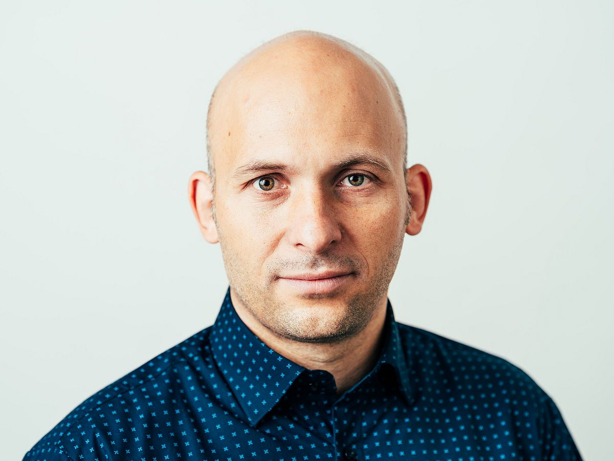
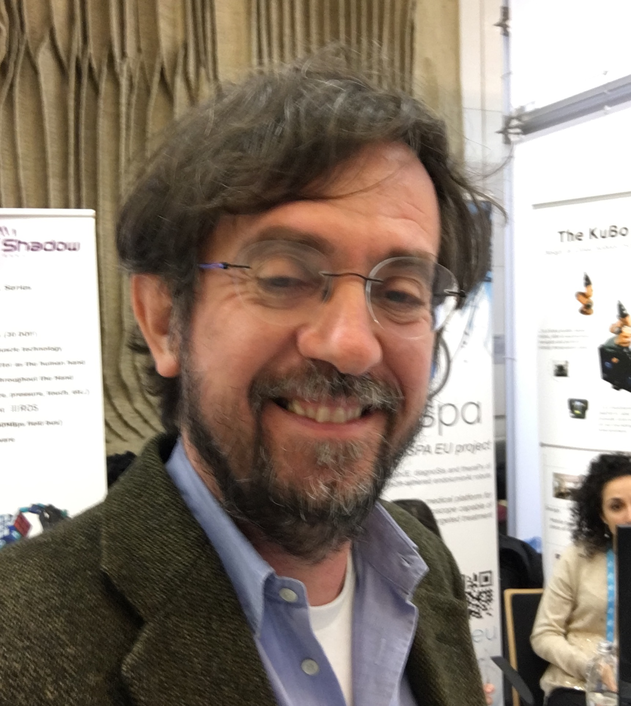
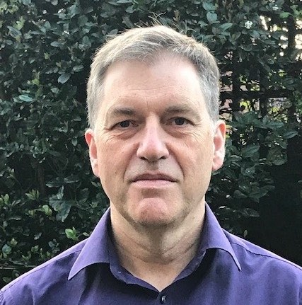

| TBA |
Steering Committee
|  |
Nico Hochgeschwender is a professor of Software Engineering for Cognitive Robots and Systems at University of Bremen, Germany. Prior to joining University of Bremen in 2023, he held positions at Hochschule Bonn-Rhein-Sieg, German Aerospace Center (Deutsches Zentrum für Luft- und Raumfahrt), and the University of Luxembourg. His research lies at the intersection of AI-enabled Robotics and Software Engineering, with an emphasis on assuring dependability, transparency, and explainability of robotics and autonomous systems, benchmarking and performance evaluation, and domain-specific modelling and languages for robotics. He is the co-founder of the RoboCup@Work competition and his team became a world champion in 2023. In 2023, he received the Ring of Honor of the VDI (Verein Deutscher Ingenieure) in recognition of his achievements and numerous scientific contributions in the field of robotics and AI. He is a co-chair of the IEEE RAS Technical Committee on Software Engineering for Robotics and Automation. |
|  |
Fabio Bonsignorio is ERA Chair in AI for Robotics at FER, University of Zagreb, Croatia. He is Founder and CEO of Heron Robots (advanced robotics solutions), see www.heronrobots.com. He has been visiting professor at the Biorobotic Institute of the Scuola Superiore Sant'Anna in Pisa from 2014 to 2019. He has been a professor in the Department of System Enginering and Automation at the University Carlos III of Madrid until 2014. In 2009 he got the Santander Chair of Excellence in Robotics at the same university. He has been visiting professor at the University of Basilicata in 2024. He has been working for some 20 years in the high tech industry before joining the research community. He coordinates the ShanghAI Lectures, initiated by famous University of Zurich Prof.em. Rolf Pfeifer in 2009, since 2013. He initiated the AIFORS Colloquia series in 2024. He is developing radical new approaches to design novel deeply biomimicking robots addressing foundational issues in Physical AI. He is a pioneer and has introduced the topic of Reproducibility of results in Robotics and AI. He is a pioneer in the application of the blockchain to robotics and IA (smart cities, smart land, smart logistics, circular economy. He coordinates the Topic Group of euRobotics about Experiment Replication, Benchmarking, Challenges and Competitions. He is co-chair of the IEEE Robotics & Automation Society (RAS) Technical Commitee, TC-PEBRAS (PErformance and Benchmarking of Robotics and Autonomous Systems). He is a Distinguished Lecturer for IEEE Robotics and Automation Society. He is a Senior Member of IEEE and member of the Order of the Engineers of Genoa, Italy. |
|  |
Michael Fisher is a Professor of Computer Science, and Royal Academy of Engineering Chair in Emerging Technologies, at the University of Manchester. His research concerns verification, software engineering, self-awareness, and trustworthiness of autonomous systems, with applications across robotics and autonomous vehicles and encompassing broader ethical issues such as sustainability and responsibility. Fisher co-chairs the IEEE Technical Committee on the Verification of Autonomous Systems, chairs the British Standards Institution committee on Sustainable Robotics, and is currently on secondment (for 2 days per week) to the UK Government's Department for Science, Innovation and Technology advising on issues around AI and Robotics. |
|
Kevin Leahy is an Assistant Professor in Robotics Engineering at Worcester Polytechnic Institute. His current work involves AI for autonomous systems, with an emphasis on formal methods and multi-agent systems. He received his Ph.D. degree in Mechanical Engineering in 2017, his MS degree in Mechanical Engineering in 2016, and his BA in Economics in 2009, all from Boston University. From 2017 to 2023, he was a member of the Technical Staff at MIT Lincoln Laboratory. At MIT Lincoln Laboratory he focused on a variety of domains, including learning decentralized control strategies for multi-agent systems, researching collision avoidance in aviation, and planning for heterogeneous teams from high-level specifications. He currently serves as Associate Co-chair on the IEEE Technical Committee for Verification of Autonomous Systems. |